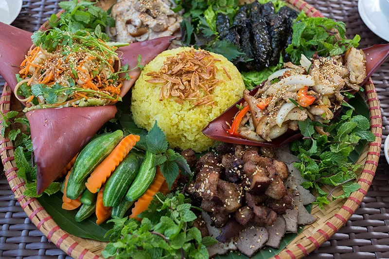

Khám Phá Hà Giang
Hà Giang, vùng cao tại phía Bắc Việt Nam, là điểm đến hấp dẫn với những cảnh đẹp hùng vĩ, những con đường đèo quanh co và văn hóa độc đáo của các dân tộc thiểu số.
Nơi đây có những thửa ruộng bậc thang nổi tiếng như cánh đồng quê Mã Pí Lèng, đỉnh núi Lũng Cú, và thác nước Đồng Văn.
Những Điểm Du Lịch Nổi Tiếng
- Khám Phá Đá Động Đồng Văn: Một khu du lịch độc đáo với cảnh đẹp đá karst hiếm có.
- Đèo Mã Pí Lèng: Một trong những con đèo ngoạn mục nhất Việt Nam, nơi đây cung cấp tầm nhìn tuyệt vời về thung lũng và dãy núi.
- Huyện Hoàng Su Phì: Nổi tiếng với cảnh đẹp ruộng bậc thang đa sắc màu.
Đặc Sản và Ẩm Thực
Những sản phẩm như thịt gà Đồng Văn, rượu Lũng Cú, và các món ẩm thực độc đáo của người H'Mông làm nên bản sắc văn hóa ẩm thực độc đáo tại Hà Giang.
Hoạt Động Ngoại Ô
Khám phá các hoạt động ngoại ô như trekking qua thung lũng Quản Bạ, thăm làng cổ Lũng Cú, và thưởng thức ẩm thực địa phương tại các chợ đêm.